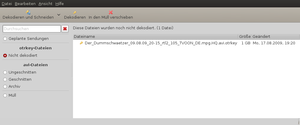

OTR-Verwaltung
Ausbaufähige Anleitung
Dieser Anleitung fehlen noch einige Informationen. Wenn Du etwas verbessern kannst, dann editiere den Beitrag, um die Qualität des Wikis noch weiter zu verbessern.
Anmerkung: Der Artikel ist sehr unübersichtlich; es wäre sinnvoll, die Installation für Trusty deutlicher aufzuzeigen.
Dieser Artikel wurde für die folgenden Ubuntu-Versionen getestet:
Ubuntu 14.04 Trusty Tahr
Zum Verständnis dieses Artikels sind folgende Seiten hilfreich:
OTR-Verwaltung  ist eine Anwendung, mit der sich otrkey- und avi-Dateien der Seite OnlineTvRecorder.com verwalten lassen.
ist eine Anwendung, mit der sich otrkey- und avi-Dateien der Seite OnlineTvRecorder.com verwalten lassen.
Man kann damit:
otrkey-Dateien dekodieren
.avi-Dateien mit Hilfe von Cutlists
mit Avidemux und VirtualDub schneidenmehrere Dateien gleichzeitig bearbeiten
Cutlists nach dem Schneiden bewerten
mit Avidemux und VirtualDub selbst Cutlists erstellen und hochladen
Schnitte vor dem Schneiden anspielen (benötigt MPlayer)

Installation¶
Hinweis:
OTR-Verwaltung wird nicht weiterentwickelt, ab Ubuntu 14.04 empfiehlt sich die Verwendung von OTR-Verwaltung++.
Zunächst installiert [1] man folgende Pakete:
avidemux
 mit apturl
mit apturl
Paketliste zum Kopieren:
sudo apt-get install avidemux
sudo aptitude install avidemux
#und optional für HQ-Aufnahmen
wine
mit apturl
Paketliste zum Kopieren:
sudo apt-get install wine
sudo aptitude install wine
sowie für das Anspielen der Schnitte
mplayer
mit apturl
Paketliste zum Kopieren:
sudo apt-get install mplayer
sudo aptitude install mplayer
Danach lädt man von github.com das aktuelle Paket otr-verwaltung_Versionsnummer_all.deb herunter und installiert [1] es.
Anschließend lädt man den OTR Decoder von dieser Seite herunter (Für die meisten Anwender empfiehlt sich die Version "Dynamisch gelinkt - Ubuntu", beim Easydecoder benötigt man die "Konsolenversion, [...]"). Dieser muss noch entpackt[2] werden, vorzugsweise ins Home-Verzeichnis.
Möchte man auch HQ-Aufnahmen schneiden können, müssen noch die beiden Windowsprogramme VirtualDub  und ffdshow heruntergeladen und mit Wine installiert werden. Bei 64-bit-Systemen muss man den Pfad bei der Installation anpassen von C:\Program Files (x86)\ffdshow zu C:\Program Files\ffdshow. VirtualDub VirtualDub-Versionsnummer.zip sollte zuerst in den Ordner C:\Program Files\VirtualDub entpackt werden, da ffdshow bei der Installation eine Datei im Plugin-Ordner von VirtualDub anlegt.
und ffdshow heruntergeladen und mit Wine installiert werden. Bei 64-bit-Systemen muss man den Pfad bei der Installation anpassen von C:\Program Files (x86)\ffdshow zu C:\Program Files\ffdshow. VirtualDub VirtualDub-Versionsnummer.zip sollte zuerst in den Ordner C:\Program Files\VirtualDub entpackt werden, da ffdshow bei der Installation eine Datei im Plugin-Ordner von VirtualDub anlegt.
Konfiguration¶
Vor der ersten Benutzung müssen noch einige Einstellungen getätigt werden:
Speicherorte¶
Hier können nach belieben die Speicherorte für die Dateien der verschiedenen Bearbeitungszustände angegeben werden. Für den Müll empfiehlt es sich, den entsprechenden Mülleimer des Systems zu wählen.
OTR-Einstellungen¶
Als Pfad zum oben entpackten Decoder gibt man an: /PFAD/ZUM/otrdecoder
E-Mail und Passwort müssen mit den Angaben eines gültigen Benutzerkontos auf OnlineTvRecorder übereinstimmen. Ohne ein Konto können keine otrkey-Dateien dekodiert werden!
Schneiden¶
Hier sollten die Einstellungen nach folgendem Schema getätigt werden:
| Format | Per Cutlist schneiden mit … | Manuell schneiden mit … |
| avi | avidemux2_cli | avidemux2_gtk |
| HQ.avi, HD.avi | /Pfad/zu/vdub.exe | /Pfad/zu/VirtualDub.exe |
| mp4 | avidemux2_cli | avidemux2_gtk |
Cutlist¶
Als Server trägt man http://cutlist.at/ ein.
Benutzung¶
Die Benutzung des Programms erweist sich als recht einfach und intuitiv. In dem Hauptfenster wählt man links aus, was für einen Bearbeitungsstand die zu bearbeitende Datei hat. In der Auflistung in der Mitte wählt man eine oder mehrere Dateien aus und startet über die Statusleiste die gewünschte Aktion.
Cutlist erstellen¶
mit Avidemux¶
Cutlists für AVI-Dateien in Standardqualität (kein H.264, HQ, HD) werden mit Avidemux erstellt. Dazu wählt man im Schneiden-Dialog "Manuell schneiden". Die Videodatei wird anschließend in Avidemux geladen. Nun entfernt man Werbeblöcke indem man deren Anfang mit "A" und Ende mit "B" markiert und anschließend die Entf-Taste drückt. Dann schließt man Avidemux. Dieses wird nun von OTR-Verwaltung aufgerufen und die Datei geschnitten. Zuletzt füllt man den Cutlist-Dialog aus.
Bekannte Probleme¶
OTR-Verwaltung startet nicht mehr¶
Gibt man bei der Konfiguration Orte an, die später nicht mehr verfügbar sind (z.B. externer Datenträger), dann startet OTR-Verwaltung nicht mehr. In diesem Fall muss man die Konfiguration von Hand korrigieren oder löschen. Sie befindet sich unter ~/.config/otrverwaltung.
Schneiden von HQ-Aufnahmen nicht möglich¶
Der Versuch, HQ-Aufnahmen zu schneiden, wird unter 12.04 Precise Pangolin mit einer Fehlermeldung quittiert (An integer division by zero occurred in module 'VirtualDub'). Es kann helfen, VirtualDub mittels der VirtualDub.exe manuell zu starten und unter "Options -> Preferences -> Display" den Haken bei der Einstellung "Use DirectX overlay surfaces" zu entfernen. Anschließend muss auf "Save" gedrückt werden, um die Einstellungen zu speichern. Nach dem Beenden von VirtualDub sollte das Schneiden wieder wie gewohnt funktionieren.
Neuere Versionen von ffdshow beinhalten den nötigen H.264 Codec nicht mehr. Ist das Schneiden von HQ Aufnahmen immer noch nicht möglich, sollte überprüft werden ob die oben verlinkte Version von ffdshow installiert wurde.
OTR-Verwaltung++¶
Da OTR-Verwaltung nicht mehr aktiv weiter entwickelt wird, hat sich ein Nutzer des OTR-Forums die Mühe gemacht, die Anwendung unter dem Namen OTR-Verwaltung++ zu erweitern und zu verbessern.
Die Änderungen gegenüber der Original-Version und Hinweise zur Installation sind in einem eigenen OTR-Foren-Thread zu finden.
Inzwischen stagniert auch die Entwicklung von OTRV++ durch Einführung von Python3 und GTK3. Unter Ubuntu 14.04 läuft OTRV++ jedoch weiterhin einwandfrei. Der Entwickler versucht das Installationsskript auch auf aktuellen Ubuntu-Versionen lauffähig zu halten.
Manuelle Installation¶
Bislang lässt sich OTR-Verwaltung++ nur bis Ubuntu 13.10 installieren, eine Version für 14.04 steht noch aus. Bevor OTR-Verwaltung++ genutzt werden kann, müssen folgende Pakete installiert werden:
libavformat-extra-53
libx264-123
libavcodec-extra-53
libavutil-extra-51
mplayer
python-glade2
python-libtorrent
avidemux
avidemux-cli
avidemux-qt
wine
mediainfo-gui
gstreamer0.10-gnonlin
gstreamer0.10-ffmpeg (nur bis Ubuntu 13.10)
gstreamer0.10-plugins-ugly
python-xdg
python-gst0.10
mit apturl
Paketliste zum Kopieren:
sudo apt-get install libavformat-extra-53 libx264-123 libavcodec-extra-53 libavutil-extra-51 mplayer python-glade2 python-libtorrent avidemux avidemux-cli avidemux-qt wine mediainfo-gui gstreamer0.10-gnonlin gstreamer0.10-ffmpeg gstreamer0.10-plugins-ugly python-xdg python-gst0.10
sudo aptitude install libavformat-extra-53 libx264-123 libavcodec-extra-53 libavutil-extra-51 mplayer python-glade2 python-libtorrent avidemux avidemux-cli avidemux-qt wine mediainfo-gui gstreamer0.10-gnonlin gstreamer0.10-ffmpeg gstreamer0.10-plugins-ugly python-xdg python-gst0.10
Anschließend OTR-Verwaltung von der Github-Seite  herunterladen (entweder unter "Releases" oder die Master.zip), irgendwo (bspw. /PFAD/ZUR/OTRVERWALTUNG/) entpacken und dann das Python-Skript starten:
herunterladen (entweder unter "Releases" oder die Master.zip), irgendwo (bspw. /PFAD/ZUR/OTRVERWALTUNG/) entpacken und dann das Python-Skript starten:
/PFAD/ZUR/OTRVERWALTUNG/bin/otrverwaltung
Automatisches Installationsskript¶
Der Entwickler stellt zusätzlich ein Installationsskript bereit, welches bei Ausführung unter Ubuntu 14.04 automatisch die Abhängigkeiten auflöst, benötigte Pakete aus einem PPA installiert, OTR-V++ im Ordner Software im Benutzerordner einrichtet, VirtualDub mit Wine installiert und entsprechende Menüeinträge hinzufügt.
Achtung!
Das Installationsskript ändert eigenständig die Paketquellen und installiert Fremdpakete über die Paketverwaltung. Fremdpakete können das System gefährden.
Das Skript kann lädt man zuerst von der GitHub-Projektseite herunter und führt es anschließend in einem Terminal aus.
- Erstellt mit Inyoka
-
 2004 – 2017 ubuntuusers.de • Einige Rechte vorbehalten
2004 – 2017 ubuntuusers.de • Einige Rechte vorbehalten
Lizenz • Kontakt • Datenschutz • Impressum • Serverstatus -
Serverhousing gespendet von